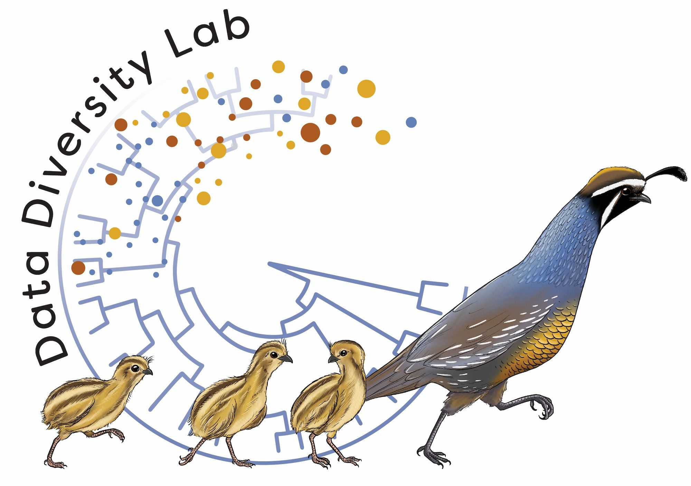

Objective
This research is being conducted with the following goals in mind:
- Facilitate evolutionary genomic analysis in the eukaryotic domain
- Make public genomic data more accessible by increasing information content per unit volume of data
- Develop improved methods and algorithms for genome informatics
- Streamline downstream analyses in genomic workflows
- Analyze patterns of genome evolution during the process of adaptation, speciation, diversification and domestication
Contact
Please direct comments and queries to this email.
Acknowledgments
This research is a collaboration between the Arizona Genomics Institute (AGI) and Data Diversity Lab at the University of Arizona (UA). We thank the UA and AGI HPC teams for assistance with compute resources. The research data is hosted on AGI's own AVA cluster. We thank Abid Mahmood and his team at EezahTech.com for setting up the modified phylotree.js backend treeviewer and PHP templates for the website.
